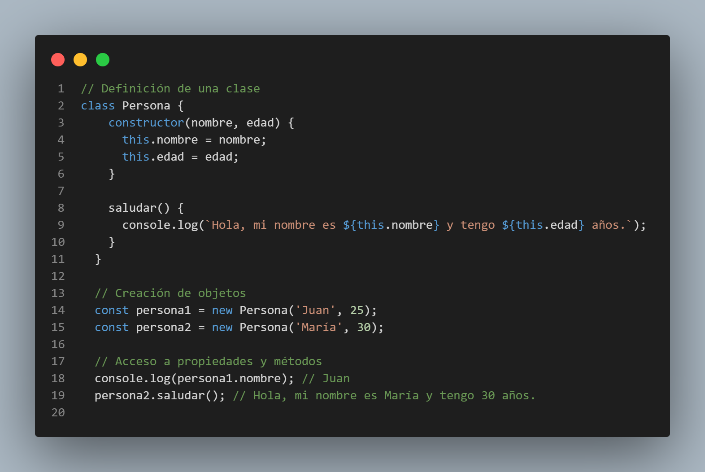
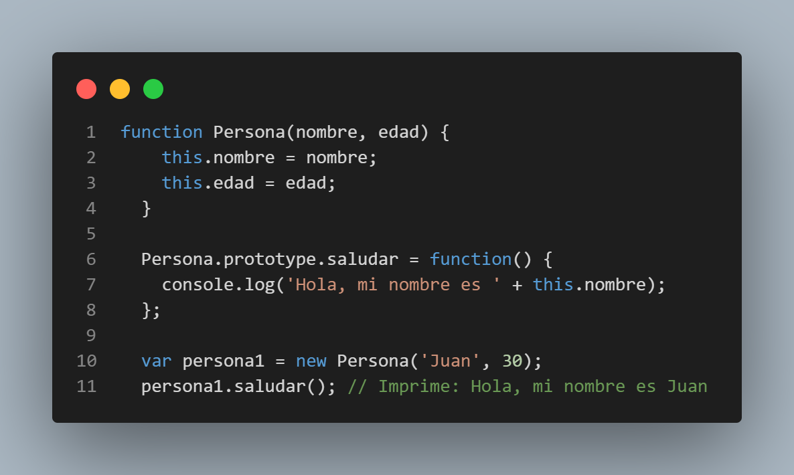
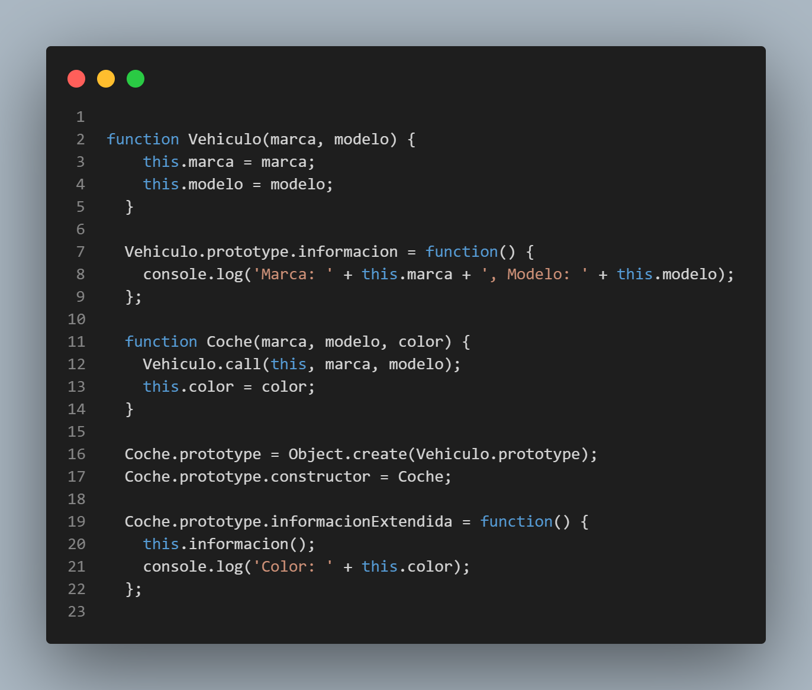
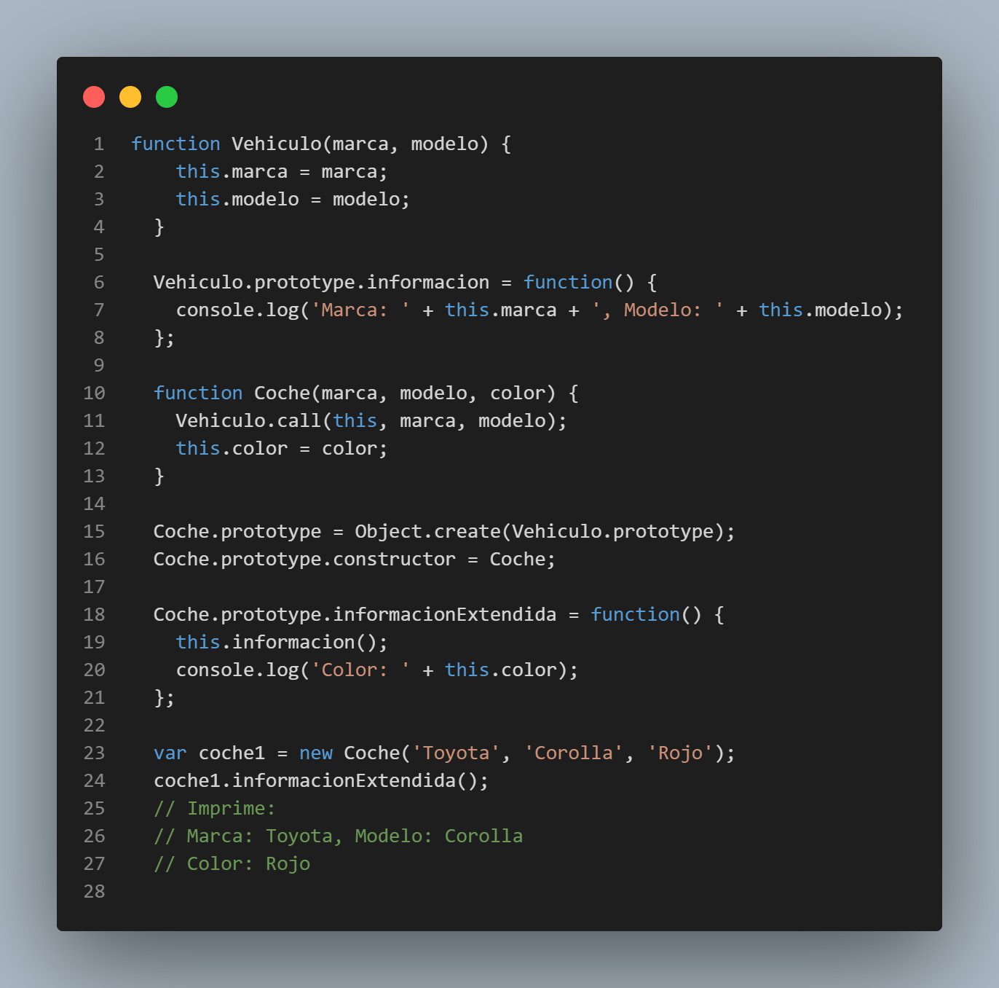
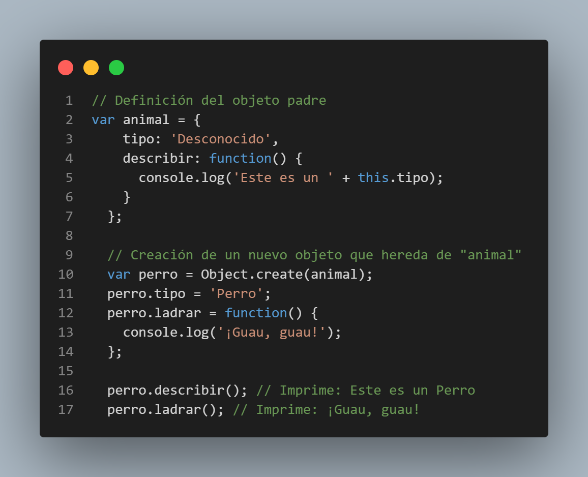
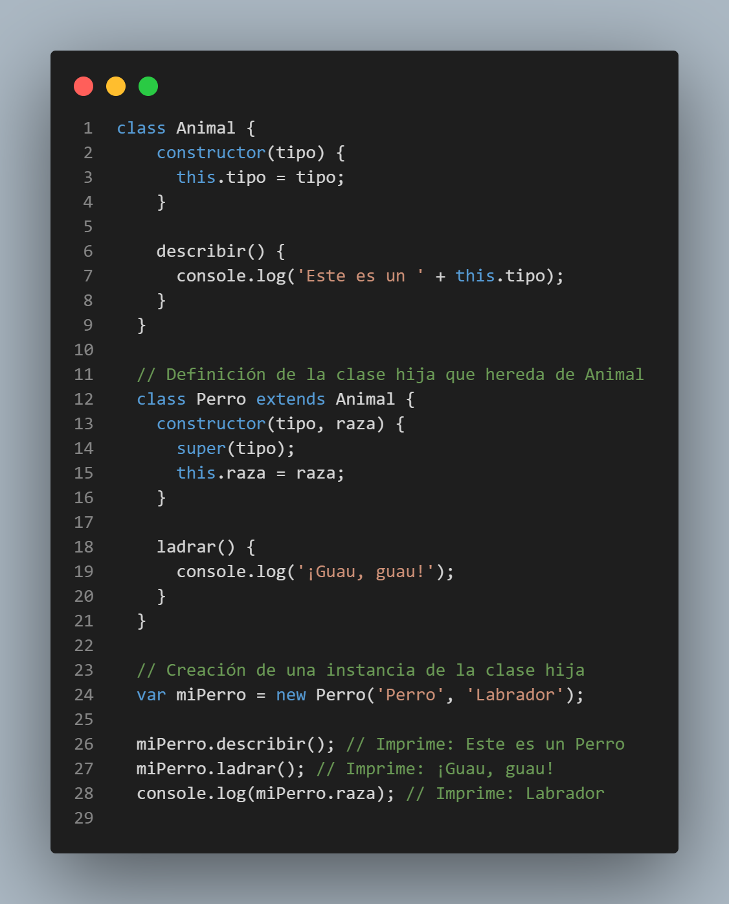
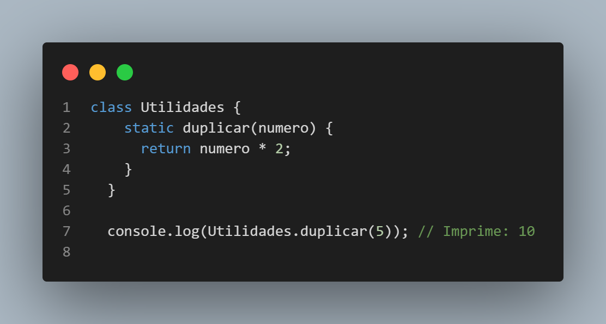
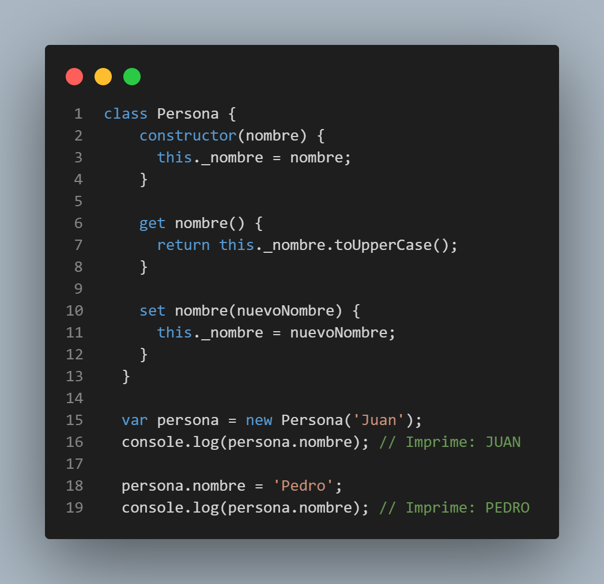

Programación Orientada a Objetos
La programación orientada a objetos (POO) en JavaScript es un enfoque de programación que se basa en el concepto de objetos y sus interacciones para resolver problemas. Aunque JavaScript es un lenguaje de programación basado en prototipos, también se puede utilizar para implementar paradigmas de programación orientada a objetos.
En la POO, los objetos son entidades que encapsulan datos y comportamientos relacionados. Estos objetos se crean a partir de una plantilla llamada clase, que define las propiedades y métodos que los objetos de esa clase pueden tener. Aquí tienes un ejemplo básico de cómo se puede utilizar la POO en JavaScript:
En el ejemplo anterior, creamos una clase llamada Persona con un constructor que recibe el nombre y la edad como parámetros. La clase también tiene un método llamado saludar() que muestra un mensaje en la consola utilizando los datos de la instancia.
Luego, creamos dos objetos (persona1 y persona2) a partir de la clase Persona utilizando la palabra clave new. Podemos acceder a las propiedades de los objetos utilizando la notación de punto (nombre y edad) y llamar a los métodos de los objetos (saludar()).
La programación orientada a objetos en JavaScript también permite la herencia, donde una clase puede heredar propiedades y métodos de otra clase. Esto se logra utilizando la palabra clave extends. Aquí tienes un ejemplo:
En este ejemplo, creamos una clase Estudiante que hereda de la clase Persona utilizando la palabra clave extends. La clase Estudiante agrega una nueva propiedad grado y un nuevo método estudiar(). Al crear un objeto estudiante1 a partir de la clase Estudiante, podemos acceder tanto a los métodos heredados de la clase Persona como a los propios de la clase Estudiante.
La programación orientada a objetos en JavaScript ofrece muchas posibilidades y ventajas, como la reutilización de código, la organización de la lógica en entidades lógicas y la encapsulación de datos. Sin embargo, también es importante tener en cuenta las particularidades de JavaScript y cómo se implementa la POO en este lenguaje, basado en prototipos.
Prototipos
Los prototipos son una parte fundamental de JavaScript y juegan un papel central en su modelo de programación orientada a prototipos. En JavaScript, cada objeto tiene un prototipo, que es otro objeto al que se le pueden agregar propiedades y métodos. Cuando intentas acceder a una propiedad o método en un objeto, JavaScript primero busca esa propiedad en el objeto en sí. Si no la encuentra, continúa buscando en el prototipo del objeto y así sucesivamente, hasta llegar al prototipo final llamado "Object.prototype". Esto se conoce como cadena de prototipos.
Prototipo de un objeto simple:
En JavaScript, los prototipos se pueden crear de varias formas:
- Prototipos implícitos: Todos los objetos en JavaScript tienen un prototipo implícito que es el objeto base para el objeto en sí. Por ejemplo, los objetos creados mediante llaves {} tienen un prototipo implícito de Object.prototype.
- Funciones constructoras: Puedes definir una función constructora y luego crear objetos usando el operador new. La función constructora actúa como una plantilla para crear objetos y su prototipo se define automáticamente a través de la propiedad prototype.
- Clases (a partir de ES6): A partir de ECMAScript 2015 (ES6), JavaScript introdujo la sintaxis de clases, que es una forma más declarativa de crear objetos y establecer prototipos. Las clases en JavaScript todavía están basadas en prototipos, y la herencia se logra a través de la herencia de prototipos utilizando la palabra clave extends.
La propiedad prototype es una propiedad que se encuentra en las funciones constructoras y se utiliza para establecer el prototipo de los objetos creados a través de la función constructora. Esta propiedad es un objeto que actúa como el prototipo de los objetos creados, y se pueden agregar propiedades y métodos a este prototipo para que estén disponibles en todos los objetos creados a través de la función constructora.
La herencia de prototipos permite la reutilización de código y la organización jerárquica de objetos. Al establecer el prototipo de un objeto en otro objeto, el objeto hereda automáticamente todas las propiedades y métodos del prototipo. Esto se logra mediante la cadena de prototipos y la palabra clave extends en las clases (a partir de ES6).
En resumen, los prototipos en JavaScript son una parte fundamental de su modelo de programación orientada a prototipos. Permiten la herencia y la reutilización de código, y se pueden crear y establecer de diferentes formas. Los prototipos son una característica poderosa que diferencia a JavaScript de otros lenguajes de programación orientados a objetos.
Prototipo de una clase más compleja:
Estos son solo algunos ejemplos para mostrar cómo se pueden crear prototipos en JavaScript. Los prototipos son una parte fundamental de la programación orientada a objetos en JavaScript y permiten la reutilización de código a través de la herencia y la extensión de objetos.
Herencia Prototípica
La herencia prototípica es un concepto fundamental en JavaScript y se basa en la idea de que los objetos pueden heredar propiedades y métodos de otros objetos. A diferencia de los lenguajes de programación tradicionales que utilizan una estructura de clase, JavaScript utiliza la herencia prototípica para lograr la reutilización de código.
En JavaScript, cada objeto tiene un enlace interno llamado "prototipo" que apunta a otro objeto. Cuando se busca una propiedad o método en un objeto, si no se encuentra en el propio objeto, JavaScript lo buscará en su prototipo. Este proceso continuará hasta llegar al objeto base llamado "Object.prototype".
Aquí tienes un ejemplo que ilustra la herencia prototípica en JavaScript:
En este ejemplo, creamos un objeto animal que actúa como el objeto padre. Luego, utilizamos Object.create(animal) para crear un nuevo objeto perro que hereda todas las propiedades y métodos de animal. Posteriormente, agregamos una propiedad tipo específica para el perro y un método ladrar exclusivo del perro.
Al llamar a los métodos describir y ladrar en el objeto perro, podemos acceder tanto a los métodos heredados del objeto animal como a los métodos propios del objeto perro.
La herencia prototípica permite la creación de relaciones jerárquicas entre objetos y facilita la reutilización de código en JavaScript. Es importante comprender este concepto para aprovechar al máximo el poder y la flexibilidad de JavaScript como lenguaje de programación.
Clases y Herencia
JavaScript introdujo la sintaxis de clases en ECMAScript 2015 (también conocido como ES6) para facilitar la programación orientada a objetos. Aunque JavaScript sigue siendo un lenguaje basado en prototipos, las clases en JavaScript son solo una sintaxis más clara y conveniente para trabajar con prototipos.
Aquí tienes un ejemplo de cómo se pueden definir clases y lograr la herencia en JavaScript utilizando la sintaxis de clases:
En este ejemplo, hemos definido la clase Animal como la clase padre y la clase Perro como la clase hija que hereda de Animal. Utilizamos la palabra clave extends para establecer la herencia y la función super() para llamar al constructor de la clase padre.
La clase Perro tiene su propio constructor para inicializar las propiedades específicas del perro, en este caso, la raza. También puede tener métodos adicionales, como el método ladrar().
Al crear una instancia de la clase Perro, podemos llamar a los métodos heredados de la clase Animal, como describir(), así como a los métodos específicos de la clase Perro, como ladrar(). Además, podemos acceder a las propiedades específicas de la clase Perro, como raza.
La introducción de la sintaxis de clases en JavaScript hace que sea más fácil y claro trabajar con la programación orientada a objetos y la herencia. Sin embargo, es importante tener en cuenta que, en última instancia, JavaScript sigue utilizando prototipos en su núcleo.
Métodos estáticos, getters y setters
En JavaScript, las clases pueden contener métodos estáticos, getters y setters que proporcionan funcionalidades adicionales. Aquí tienes una explicación de cada uno de ellos:
Métodos estáticos: Los métodos estáticos son funciones que se definen en la clase en sí misma, en lugar de estar asociadas a las instancias de la clase. Estos métodos son accesibles directamente desde la clase, sin necesidad de crear una instancia de la misma.
En este ejemplo, la clase Utilidades contiene un método estático llamado duplicar que simplemente duplica un número. Puedes llamar a este método directamente desde la clase sin crear una instancia de la misma.
Getters y setters: Los getters y setters son métodos especiales que permiten acceder y modificar propiedades de un objeto de forma controlada. Los getters se utilizan para obtener el valor de una propiedad, mientras que los setters se utilizan para establecer el valor de una propiedad.
En este ejemplo, la clase Persona tiene una propiedad privada _nombre y utiliza un getter y un setter para acceder y modificar el valor de esa propiedad. El getter nombre devuelve el nombre en mayúsculas, mientras que el setter nombre permite establecer un nuevo nombre para la persona.
Al crear una instancia de la clase Persona, podemos utilizar el getter y el setter como si fueran propiedades normales.
Los métodos estáticos, los getters y los setters proporcionan flexibilidad adicional en la programación orientada a objetos en JavaScript. Los métodos estáticos son útiles cuando se necesita una funcionalidad que no está asociada a instancias específicas, mientras que los getters y setters permiten un control más preciso sobre el acceso y la modificación de las propiedades de un objeto.